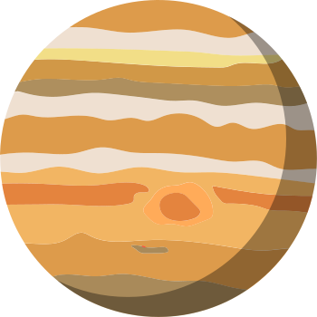
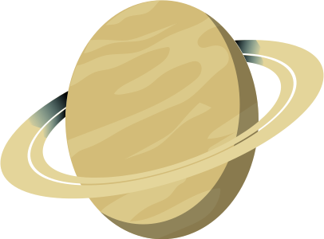

1. Mercury
Zipping around the sun in only 88 days, Mercury is the closest planet to the sun, and it's also the smallest, only a little bit larger than Earth's moon. Because its so close to the sun (about two-fifths the distance between Earth and the sun), Mercury experiences dramatic changes in its day and night temperatures: Day temperatures can reach a scorching 840 F (450 C), which is hot enough to melt lead. Meanwhile on the night side, temperatures drop to minus 290 F (minus 180 C).
2. Venus
The second planet from the sun, Venus is Earth's twin in size. Radar images beneath its atmosphere reveal that its surface has various mountains and volcanoes. But beyond that, the two planets couldn't be more different. Because of its thick, toxic atmosphere that's made of sulfuric acid clouds, Venus is an extreme example of the greenhouse effect. It's scorching-hot, even hotter than Mercury. The average temperature on Venus' surface is 900 F (465 C). At 92 bar, the pressure at the surface would crush and kill you. And oddly, Venus spins slowly from east to west, the opposite direction of most of the other planets.
3. Earth
The third planet from the sun, Earth is a waterworld, with two-thirds of the planet covered by ocean. It's the only world known to harbor life. Earth's atmosphere is rich in nitrogen and oxygen. Earth's surface rotates about its axis at 1,532 feet per second (467 meters per second) — slightly more than 1,000 mph (1,600 kph) — at the equator. The planet zips around the sun at more than 18 miles per second (29 km per second).
4. Mars
The fourth planet from the sun is Mars, and it's a cold, desert-like place covered in dust. This dust is made of iron oxides, giving the planet its iconic red hue. Mars shares similarities with Earth: It is rocky, has mountains, valleys and canyons, and storm systems ranging from localized tornado-like dust devils to planet-engulfing dust storms.
Substantial scientific evidence suggests that Mars at one point billions of years ago was a much warmer, wetter world. Rivers and maybe even oceans existed. Although Mars' atmosphere is too thin for liquid water to exist on the surface for any length of time, remnants of that wetter Mars still exist today. Sheets of water ice the size of California lie beneath Mars' surface, and at both poles are ice caps made in part of frozen water. In July 2018, scientists revealed that they had found evidence of a liquid lake beneath the surface of the southern pole's ice cap. It's the first example of a persistent body of water on the Red Planet.

5. Jupiter
The fifth planet from the sun, Jupiter is a giant gas world that is the most massive planet in our solar system — more than twice as massive as all the other planets combined, according to NASA. Its swirling clouds are colorful due to different types of trace gases. And a major feature in its swirling clouds is the Great Red Spot, a giant storm more than 10,000 miles wide. It has raged at more than 400 mph for the last 150 years, at least. Jupiter has a strong magnetic field, and with 75 moons, it looks a bit like a miniature solar system.

6. Saturnus
The sixth planet from the sun, Saturn is known most for its rings. When polymath Galileo Galilei first studied Saturn in the early 1600s, he thought it was an object with three parts: a planet and two large moons on either side. Not knowing he was seeing a planet with rings, the stumped astronomer entered a small drawing — a symbol with one large circle and two smaller ones — in his notebook, as a noun in a sentence describing his discovery. More than 40 years later, Christiaan Huygens proposed that they were rings. The rings are made of ice and rock and scientists are not yet sure how they formed. The gaseous planet is mostly hydrogen and helium and has numerous moons.
7. Uranus
The seventh planet from the sun, Uranus is an oddball. It has clouds made of hydrogen sulfide, the same chemical that makes rotten eggs smell so foul. It rotates from east to west like Venus. But unlike Venus or any other planet, its equator is nearly at right angles to its orbit — it basically orbits on its side. Astronomers believe an object twice the size of Earth collided with Uranus roughly 4 billion years ago, causing Uranus to tilt. That tilt causes extreme seasons that last 20-plus years, and the sun beats down on one pole or the other for 84 Earth-years at a time.The collision is also thought to have knocked rock and ice into Uranus' orbit. These later became some of the planet's 27 moons. Methane in the atmosphere gives Uranus its blue-green tint. It also has 13 sets of faint rings.
8. Neptune
The eighth planet from the sun, Neptune is about the size of Uranus and is known for supersonic strong winds. Neptune is far out and cold. The planet is more than 30 times as far from the sun as Earth. Neptune was the first planet predicted to exist by using math, before it was visually detected. Irregularities in the orbit of Uranus led French astronomer Alexis Bouvard to suggest some other planet might be exerting a gravitational tug. German astronomer Johann Galle used calculations to help find Neptune in a telescope. Neptune is about 17 times as massive as Earth and has a rocky core.